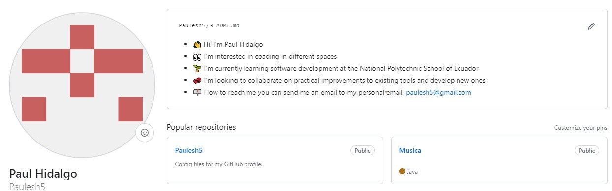
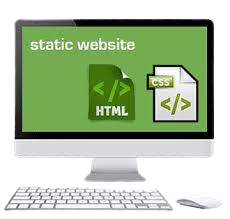
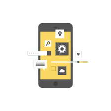
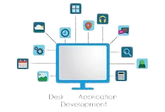
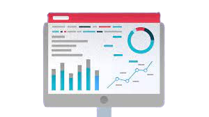
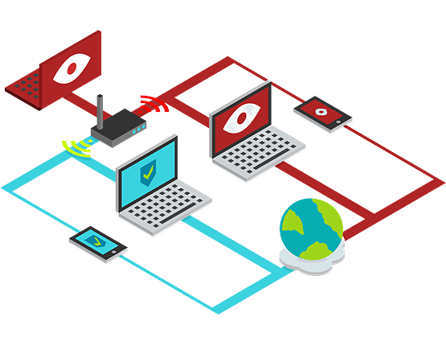

Crear sitios web básicos utilizando HTML, CSS y JavaScript para pequeñas empresas o proyectos personales.

Escribir scripts en Python para automatizar procesos repetitivos, como la limpieza de archivos, la organización de datos, etc.
Crear aplicaciones móviles simples utilizando frameworks en Python.

Realizar tareas de mantenimiento, actualización de contenido y resolución de problemas en sitios web existentes.
Crear aplicaciones de escritorio utilizando lenguajes como Java o C++, brindando soluciones a medida para pequeñas empresas.

Proporcionar asistencia en la resolución de problemas de hardware y software, instalación y configuración de sistemas operativos y aplicaciones.
Utilizar lenguajes como Python y bibliotecas como Pandas y Matplotlib para analizar y visualizar datos, ayudando en la interpretación y presentación de resultados.

Ayudar en la configuración básica de redes y el cableado estructurado en entornos de pequeñas empresas.
